Previous slide Next slide Toggle fullscreen Open presenter view
CEN429 Güvenli Programlama · Hafta 10
Sertifikalar ve Kriptografik Yöntemler
CEN429 Güvenli Programlama — Hafta 10
Dr. Öğr. Üyesi Uğur CORUH · 20.11.2026
RTEÜ Bilgisayar Mühendisliği · 2026-2027 Güz
CEN429 Güvenli Programlama · Hafta 10
Bugünün planı (3 saat)
Saat
Bölüm
Konu
1
0–3
Temel kavramlar · algoritma/anahtar seçimi · kipler/dolgu · MAC/HMAC
2
4–7
RSA/ECC · OAEP/PSS · dijital imza · Diffie–Hellman · PKI
3
8–13
X.509 · zincir · CRL/OCSP · HSM/PKCS#11 · kuantum sonrası · proje
RTEÜ Bilgisayar Mühendisliği · 2026-2027 Güz
CEN429 Güvenli Programlama · Hafta 10
Kısa tarihçe — anahtarlar, sertifikalar, PKI
1976–77 — Diffie–Hellman ve RSA : tanımadığınla güvenli konuşma1988 — X.509 sertifika biçimi; kimliği bir CA imzası taşır1995 — ticari CA'lar ve PKI ; ardından CRL ve OCSP (iptal)2014 Heartbleed · 2015 Let's Encrypt · 2018 TLS 1.3 · 2022–24 PQC (Kyber/Dilithium)
Bugünkü kurallar (doğru kip/dolgu, zincir doğrulama, iptal) bu acı derslerden çıktı.
RTEÜ Bilgisayar Mühendisliği · 2026-2027 Güz
CEN429 Güvenli Programlama · Hafta 10
Bu hafta nereye oturuyor?
3. hafta: kriptoya giriş (gizlilik, bütünlük).Bu hafta (10): doğru algoritma/kip/dolgu seçimi , anahtar yaşam döngüsü, PKI .11. hafta: anahtar yazılımda korunuyorsa → whitebox.
RTEÜ Bilgisayar Mühendisliği · 2026-2027 Güz
CEN429 Güvenli Programlama · Hafta 10
Öğrenme çıktısı
Bu hafta ÖÇ.2 / ÖÇ.4 üstünedir.
Sonunda yapabileceğiniz:
Doğru algoritma, kip, dolgu ve anahtar uzunluğu seçmek
İmza ve anahtar değişiminin tuzaklarını görmek
Bir sertifika zincirini doğru doğrulamak
RTEÜ Bilgisayar Mühendisliği · 2026-2027 Güz
CEN429 Güvenli Programlama · Hafta 10
Ana fikir
Kriptoda hatalar genelde algoritmada değil, kullanımdadır : yanlış kip, yanlış dolgu, doğrulanmayan imza,
Bugün doğru kullanımı öğreneceğiz.
RTEÜ Bilgisayar Mühendisliği · 2026-2027 Güz
CEN429 Güvenli Programlama · Hafta 10
0. Temel kavramlar (sıfırdan)
RTEÜ Bilgisayar Mühendisliği · 2026-2027 Güz
CEN429 Güvenli Programlama · Hafta 10
Simetrik vs asimetrik (hatırlatma)
Simetrik: tek anahtar, şifrele ve çöz (AES). Hızlı.Asimetrik: açık + gizli anahtar çifti (RSA, ECC). Yavaş ama anahtar dağıtımı kolay.Pratikte birlikte : asimetrik ile anahtar taşı, simetrik ile veri şifrele.
RTEÜ Bilgisayar Mühendisliği · 2026-2027 Güz
CEN429 Güvenli Programlama · Hafta 10
Blok şifre ve kip
Blok şifre: sabit boyutlu bloğu şifreler (AES: 16 bayt).Kip (mode): blokları nasıl zincirleyeceğimiz (CBC, GCM…).Kip seçimi güvenliğin kalbidir .
RTEÜ Bilgisayar Mühendisliği · 2026-2027 Güz
CEN429 Güvenli Programlama · Hafta 10
Dolgu (padding)
Dolgu: veri blok boyutunun katı değilse tamamlama.Bazı kiplerde gerekir (CBC), bazılarında yok (GCM).
Yanlış dolgu işleme → dolgu kâhini saldırısı.
RTEÜ Bilgisayar Mühendisliği · 2026-2027 Güz
CEN429 Güvenli Programlama · Hafta 10
AEAD nedir?
AEAD (Authenticated Encryption with Associated Data): gizlilik + bütünlüğü birlikte veren şifreleme.Örnek: AES-GCM, ChaCha20-Poly1305.
Modern tercih: ayrı MAC uğraşma, AEAD kullan.
RTEÜ Bilgisayar Mühendisliği · 2026-2027 Güz
CEN429 Güvenli Programlama · Hafta 10
MAC ve HMAC
MAC (Message Authentication Code): bir mesajın değişmediğini ve doğru taraftan geldiğini kanıtlayan etiket (simetrik).HMAC: özet fonksiyonuna dayalı yaygın bir MAC.Bütünlük için.
RTEÜ Bilgisayar Mühendisliği · 2026-2027 Güz
CEN429 Güvenli Programlama · Hafta 10
Encrypt-then-MAC — şema
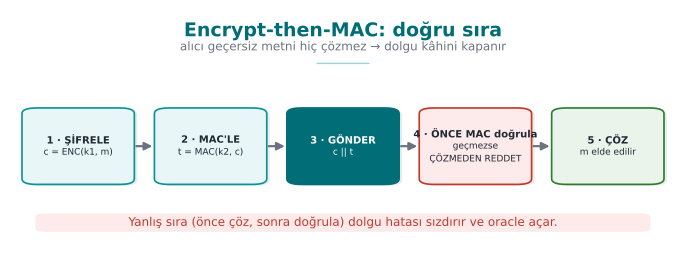
RTEÜ Bilgisayar Mühendisliği · 2026-2027 Güz
CEN429 Güvenli Programlama · Hafta 10
Özet (hash)
Özet: veriden hesaplanan sabit parmak izi (SHA-256).Tek yönlü: özetten veri geri gelmez.
İmza ve MAC'in yapı taşı.
RTEÜ Bilgisayar Mühendisliği · 2026-2027 Güz
CEN429 Güvenli Programlama · Hafta 10
Dijital imza
İmza: asimetrik; gizli anahtarla imzala, açık anahtarla doğrula.Sağlar: bütünlük + inkâr edilemezlik (kim imzaladı).
MAC'ten farkı: asimetrik, herkes doğrulayabilir.
RTEÜ Bilgisayar Mühendisliği · 2026-2027 Güz
CEN429 Güvenli Programlama · Hafta 10
RSA ve eliptik eğri (ECC)
RSA: klasik asimetrik; büyük anahtarlar (2048+ bit).ECC: eliptik eğri; aynı güvenlik daha küçük anahtarla (Ed25519, X25519).Modern tercih giderek ECC.
RTEÜ Bilgisayar Mühendisliği · 2026-2027 Güz
CEN429 Güvenli Programlama · Hafta 10
Diffie–Hellman (DH)
DH: iki tarafın, gizli anahtar paylaşmadan ortak bir sır türetmesi.Ağ üzerinden anahtar anlaşması.
Kimlik doğrulanmazsa araya girme (MITM) riski.
RTEÜ Bilgisayar Mühendisliği · 2026-2027 Güz
CEN429 Güvenli Programlama · Hafta 10
Kimliksiz DH ve MITM — şema
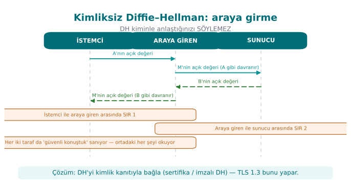
RTEÜ Bilgisayar Mühendisliği · 2026-2027 Güz
CEN429 Güvenli Programlama · Hafta 10
PKI ve CA
PKI (Public Key Infrastructure): "hangi açık anahtar kime ait?" sorusunu çözen güven sistemi.CA (Certificate Authority): sertifikaları imzalayan güvenilir taraf.Kök CA → ara CA → sunucu sertifikası.
RTEÜ Bilgisayar Mühendisliği · 2026-2027 Güz
CEN429 Güvenli Programlama · Hafta 10
Sertifika ve X.509
Sertifika: bir açık anahtarı bir kimliğe (alan adı) bağlayan, CA'nın imzaladığı belge.X.509: sertifikaların standart biçimi.İçinde: konu, açık anahtar, geçerlilik, imza, SAN.
RTEÜ Bilgisayar Mühendisliği · 2026-2027 Güz
CEN429 Güvenli Programlama · Hafta 10
CRL ve OCSP
CRL (Certificate Revocation List): iptal edilmiş sertifikaların listesi .OCSP: bir sertifikanın iptal durumunu anlık sorma."Bu sertifika hâlâ geçerli mi?" sorusu.
RTEÜ Bilgisayar Mühendisliği · 2026-2027 Güz
CEN429 Güvenli Programlama · Hafta 10
HSM, PKCS#11, SoftHSM
HSM: anahtarları saklayan/işleten özel donanım ; anahtar dışarı çıkmaz.PKCS#11: anahtar modülleriyle konuşmanın standart arayüzü.SoftHSM: HSM'in yazılım benzetimi (test için).
RTEÜ Bilgisayar Mühendisliği · 2026-2027 Güz
CEN429 Güvenli Programlama · Hafta 10
Kuantum sonrası (PQC)
PQC (Post-Quantum Cryptography): kuantum bilgisayara dayanıklı algoritmalar.Bugünkü RSA/ECC gelecekte tehdit altında.
Standartlaşma sürüyor (ör. ML-KEM).
RTEÜ Bilgisayar Mühendisliği · 2026-2027 Güz
CEN429 Güvenli Programlama · Hafta 10
Şimdi hazırız
Terimler:
simetrik/asimetrik · blok şifre/kip · dolgu · AEAD · MAC/HMAC · özet · imza · RSA/ECC · DH · PKI/CA · sertifika/X.509 · CRL/OCSP · HSM/PKCS#11 · PQC
Şimdi: doğru algoritma ve anahtar seçimi.
RTEÜ Bilgisayar Mühendisliği · 2026-2027 Güz
CEN429 Güvenli Programlama · Hafta 10
1. Algoritma ve anahtar seçimi
RTEÜ Bilgisayar Mühendisliği · 2026-2027 Güz
CEN429 Güvenli Programlama · Hafta 10
Güncel, standart, iyi kullanılan
Üç kural:
Güncel: kırılmamış algoritma (AES, SHA-256, Ed25519).Standart: kendi kriptonu yazma; denenmiş kütüphane.İyi kullanılan: doğru kip, dolgu, anahtar yönetimi.
RTEÜ Bilgisayar Mühendisliği · 2026-2027 Güz
CEN429 Güvenli Programlama · Hafta 10
Kaçınılacaklar
MD5, SHA-1 (özet için), DES/3DES, RC4.
ECB kipi.
Kendi "şifreleme" algoritman.
Sabit/öngörülebilir IV veya anahtar.
RTEÜ Bilgisayar Mühendisliği · 2026-2027 Güz
CEN429 Güvenli Programlama · Hafta 10
Anahtar uzunluğu
Amaç
Öneri (yaklaşık)
Simetrik
AES-128 (yeter), AES-256
RSA
≥ 2048, tercih 3072
ECC
256-bit (≈ RSA-3072)
Özet
SHA-256+
RTEÜ Bilgisayar Mühendisliği · 2026-2027 Güz
CEN429 Güvenli Programlama · Hafta 10
En zayıf halka kuralı
RSA-2048 (~112 bit) + AES-256 (256 bit)
→ sistem ~112 bit (en zayıf halka)
Bileşenleri dengeli seç.
128 bit hedefliyorsan RSA-3072 ya da ECC.
RTEÜ Bilgisayar Mühendisliği · 2026-2027 Güz
CEN429 Güvenli Programlama · Hafta 10
2. Blok şifre kipleri ve dolgu
RTEÜ Bilgisayar Mühendisliği · 2026-2027 Güz
CEN429 Güvenli Programlama · Hafta 10
OAEP / PSS — şema
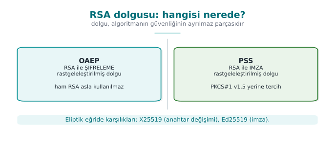
RTEÜ Bilgisayar Mühendisliği · 2026-2027 Güz
CEN429 Güvenli Programlama · Hafta 10
ECB · asla
ECB: her bloğu bağımsız şifreler.Aynı blok → aynı şifreli çıktı → desen sızar .
Ünlü "ECB penguen" örneği.
ECB kullanma.
RTEÜ Bilgisayar Mühendisliği · 2026-2027 Güz
CEN429 Güvenli Programlama · Hafta 10
ECB neden kötü — şema
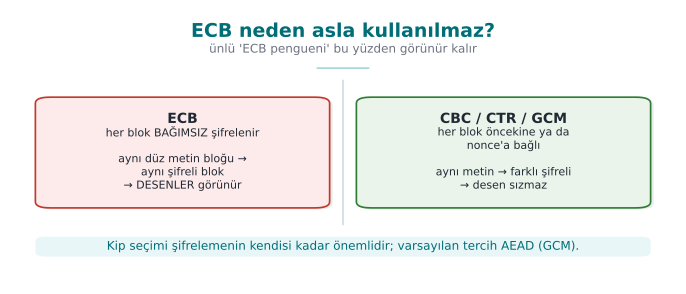
RTEÜ Bilgisayar Mühendisliği · 2026-2027 Güz
CEN429 Güvenli Programlama · Hafta 10
CBC · dikkatli
CBC: her blok bir öncekiyle zincirlenir; IV gerekir.IV rastgele ve tekrarsız olmalı.
Tek başına bütünlük vermez → ayrı MAC şart.
RTEÜ Bilgisayar Mühendisliği · 2026-2027 Güz
CEN429 Güvenli Programlama · Hafta 10
CBC + dolgu = risk
CBC dolgu gerektirir.
Yanlış dolgu işleme → dolgu kâhini (birazdan).
Bu yüzden modern tercih AEAD .
RTEÜ Bilgisayar Mühendisliği · 2026-2027 Güz
CEN429 Güvenli Programlama · Hafta 10
GCM · modern tercih (AEAD)
AES-GCM: gizlilik + bütünlük birlikte.Dolgu yok ; bir nonce (tek kullanımlık sayı) gerekir.
Nonce asla tekrar etmemeli (aynı anahtar altında).
RTEÜ Bilgisayar Mühendisliği · 2026-2027 Güz
CEN429 Güvenli Programlama · Hafta 10
Nonce/IV kuralı
IV/nonce benzersiz olmalı.
GCM'de nonce tekrarı felakettir (anahtar/veri sızabilir).
Sayaç ya da rastgele (yeterli uzunlukta) kullan.
RTEÜ Bilgisayar Mühendisliği · 2026-2027 Güz
CEN429 Güvenli Programlama · Hafta 10
Nonce tekrarı — şema
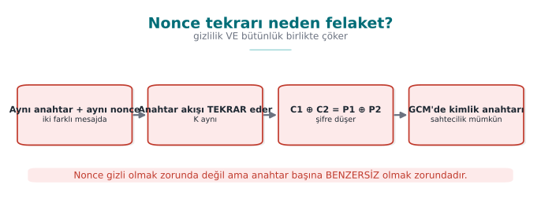
RTEÜ Bilgisayar Mühendisliği · 2026-2027 Güz
CEN429 Güvenli Programlama · Hafta 10
ChaCha20-Poly1305
AES-GCM'e AEAD alternatifi.
Donanım AES desteği yoksa hızlı.
Aynı nonce kuralı geçerli.
RTEÜ Bilgisayar Mühendisliği · 2026-2027 Güz
CEN429 Güvenli Programlama · Hafta 10
Dolgu kâhini (padding oracle)
RTEÜ Bilgisayar Mühendisliği · 2026-2027 Güz
CEN429 Güvenli Programlama · Hafta 10
Sorun · adım adım
Sunucu, CBC çözerken dolgu geçersiz ve MAC geçersiz için farklı yanıt/zaman verir.
Saldırgan şifreli metni değiştirip yanıtlara bakar.
Yanıt farkından düz metni bayt bayt çözer.
RTEÜ Bilgisayar Mühendisliği · 2026-2027 Güz
CEN429 Güvenli Programlama · Hafta 10
Neden oluyor?
Hata mesajı/zamanı, iç durumu sızdırıyor .
Saldırgan bunu bir kâhin (oracle) gibi kullanıyor.
RTEÜ Bilgisayar Mühendisliği · 2026-2027 Güz
CEN429 Güvenli Programlama · Hafta 10
Çözüm
AEAD kullan (GCM): dolgu yok, tek doğrulama.CBC zorundaysan: encrypt-then-MAC + tek ve aynı hata.
Zamanlama farkı da sızıntıdır → sabit zamanlı.
RTEÜ Bilgisayar Mühendisliği · 2026-2027 Güz
CEN429 Güvenli Programlama · Hafta 10
Ders
Şifreleme tek başına yetmez; bütünlük ve tutarlı hata şart.
Dolgu kâhini, "kullanım hatası"nın klasik örneğidir.
RTEÜ Bilgisayar Mühendisliği · 2026-2027 Güz
CEN429 Güvenli Programlama · Hafta 10
Bölüm 1–2 — kısa sınama
En zayıf halka kuralını bir örnekle açıklayın.
ECB neden kullanılmaz?
GCM'de nonce tekrarı neden felakettir?
Dolgu kâhinini AEAD nasıl kapatır?
RTEÜ Bilgisayar Mühendisliği · 2026-2027 Güz
CEN429 Güvenli Programlama · Hafta 10
Bölüm 1–2 — cevaplar
Sistem en zayıf bileşeni kadar güvenli. Örn. AES-256 kullanıp anahtarı düz dosyada tutmak → anahtar en zayıf halka.
ECB aynı açık bloğu aynı şifreli bloğa çevirir → desen sızar, anlamsal güvenlik yok.Aynı anahtar+nonce anahtar akışını tekrarlar (gizlilik çöker) ve GHASH kimlik anahtarı ele geçirilir → felaket.
AEAD önce etiketi doğrular, yanlış etiketli metni çözmeden reddeder → dolgu hatası için oracle kalmaz.
RTEÜ Bilgisayar Mühendisliği · 2026-2027 Güz
CEN429 Güvenli Programlama · Hafta 10
3. MAC, HMAC ve bütünlük
RTEÜ Bilgisayar Mühendisliği · 2026-2027 Güz
CEN429 Güvenli Programlama · Hafta 10
HMAC neden — şema
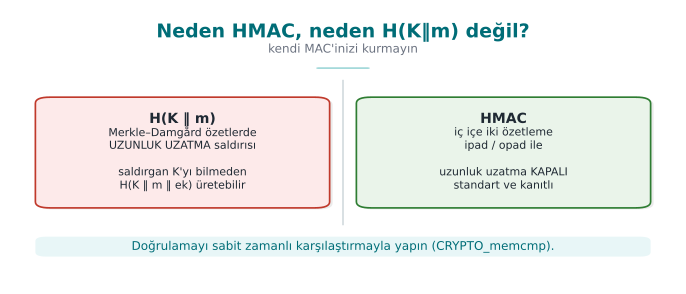
RTEÜ Bilgisayar Mühendisliği · 2026-2027 Güz
CEN429 Güvenli Programlama · Hafta 10
Neden MAC?
Şifreleme gizliliği verir, bütünlüğü vermez .
Saldırgan şifreli metni değiştirebilir.
MAC: mesaj değişmedi ve doğru taraftan geldi.
RTEÜ Bilgisayar Mühendisliği · 2026-2027 Güz
CEN429 Güvenli Programlama · Hafta 10
HMAC
Özet fonksiyonuna dayalı MAC (HMAC-SHA256).
Simetrik anahtar; iki taraf aynı anahtarı bilir.
Doğrulama sabit zamanlı karşılaştırmayla.
RTEÜ Bilgisayar Mühendisliği · 2026-2027 Güz
CEN429 Güvenli Programlama · Hafta 10
Doğru sıra · encrypt-then-MAC
1. şifrele: c = ENC(k1, m)
2. MAC'le: t = MAC(k2, c)
3. gönder: c || t
Önce şifrele, sonra şifreli metni MAC'le.
MAC geçmezse çözmeye bile kalkma .
RTEÜ Bilgisayar Mühendisliği · 2026-2027 Güz
CEN429 Güvenli Programlama · Hafta 10
Yanlış sıralar
MAC-then-encrypt: dolgu kâhinine açık.Encrypt-and-MAC: MAC düz metni sızdırabilir.Doğrusu: encrypt-then-MAC (ya da AEAD, zaten böyle yapar).
RTEÜ Bilgisayar Mühendisliği · 2026-2027 Güz
CEN429 Güvenli Programlama · Hafta 10
Yeniden oynatma (replay)
Saldırgan geçerli bir mesajı tekrar gönderir.
MAC geçerli (mesaj değişmedi) ama işlem tekrarlanır .
Çözüm: nonce , zaman damgası, sayaç.
RTEÜ Bilgisayar Mühendisliği · 2026-2027 Güz
CEN429 Güvenli Programlama · Hafta 10
AEAD hepsini yapar
AES-GCM: şifreleme + bütünlük birlikte .
"İlişkili veri" (AAD) ile başlık/bağlamı da doğrular.
Modern tercih: ayrı MAC yerine AEAD.
RTEÜ Bilgisayar Mühendisliği · 2026-2027 Güz
CEN429 Güvenli Programlama · Hafta 10
4. Asimetrik: RSA ve ECC
RTEÜ Bilgisayar Mühendisliği · 2026-2027 Güz
CEN429 Güvenli Programlama · Hafta 10
Simetrik ↔ asimetrik — şema
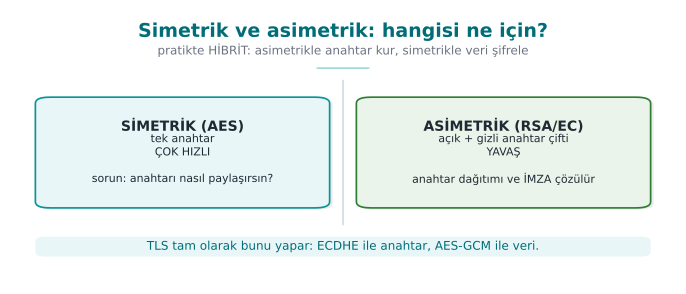
RTEÜ Bilgisayar Mühendisliği · 2026-2027 Güz
CEN429 Güvenli Programlama · Hafta 10
RSA · iki iş
Şifreleme: açık anahtarla şifrele, gizli anahtarla çöz.İmza: gizli anahtarla imzala, açık anahtarla doğrula.Büyük anahtarlar (2048+).
RTEÜ Bilgisayar Mühendisliği · 2026-2027 Güz
CEN429 Güvenli Programlama · Hafta 10
RSA · dolgu şart
Ham RSA güvensizdir .
Şifreleme için: OAEP dolgusu.İmza için: PSS dolgusu.Eski PKCS#1 v1.5: mümkünse kaçın.
RTEÜ Bilgisayar Mühendisliği · 2026-2027 Güz
CEN429 Güvenli Programlama · Hafta 10
OAEP vs PSS
OAEP: RSA şifreleme dolgusu.PSS: RSA imza dolgusu.Karıştırma: OAEP imza için değil, PSS şifreleme için değil.
RTEÜ Bilgisayar Mühendisliği · 2026-2027 Güz
CEN429 Güvenli Programlama · Hafta 10
ECC · neden?
Aynı güvenlik, daha küçük anahtar (256-bit ≈ RSA-3072).
Daha hızlı, daha az yer.
Mobil/gömülü için ideal.
RTEÜ Bilgisayar Mühendisliği · 2026-2027 Güz
CEN429 Güvenli Programlama · Hafta 10
Ed25519 ve X25519
Ed25519: modern imza algoritması.X25519: modern anahtar anlaşması (DH).Karıştırma: Ed25519 imza, X25519 anahtar.
RTEÜ Bilgisayar Mühendisliği · 2026-2027 Güz
CEN429 Güvenli Programlama · Hafta 10
Simetrik + asimetrik birlikte
1. X25519 ile ortak sır türet
2. Ondan bir AES anahtarı çıkar (KDF)
3. AES-GCM ile veriyi şifrele
Asimetrik: anahtar taşı. Simetrik: veri şifrele.
TLS bunu yapar.
RTEÜ Bilgisayar Mühendisliği · 2026-2027 Güz
CEN429 Güvenli Programlama · Hafta 10
Bölüm 3–4 — kısa sınama
Encrypt-then-MAC neden doğru sıra?
Yeniden oynatma nasıl engellenir?
OAEP ve PSS hangisi ne için?
Ed25519 ve X25519 farkı?
RTEÜ Bilgisayar Mühendisliği · 2026-2027 Güz
CEN429 Güvenli Programlama · Hafta 10
Bölüm 3–4 — cevaplar
Alıcı önce MAC'i doğrular, geçmezse çözmez → değiştirilmiş metin hiç işlenmez (dolgu kâhini kapanır).
Tazelik: nonce/sayaç, zaman damgası + pencere, tek-kullanımlık challenge.OAEP = RSA şifreleme dolgusu; PSS = RSA imza dolgusu.Ed25519 = imza (EdDSA); X25519 = anahtar değişimi (ECDH). Aynı eğri ailesi, farklı iş.
RTEÜ Bilgisayar Mühendisliği · 2026-2027 Güz
CEN429 Güvenli Programlama · Hafta 10
5. Dijital imza ve tuzakları
RTEÜ Bilgisayar Mühendisliği · 2026-2027 Güz
CEN429 Güvenli Programlama · Hafta 10
Dijital imza — şema
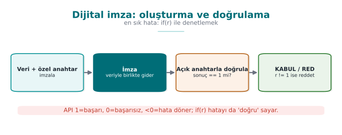
RTEÜ Bilgisayar Mühendisliği · 2026-2027 Güz
CEN429 Güvenli Programlama · Hafta 10
İmza · ne sağlar?
Bütünlük: mesaj değişmedi.Kimlik/inkâr edilemezlik: gizli anahtar sahibi imzaladı.Doğrulama: açık anahtarla, herkes yapabilir.
RTEÜ Bilgisayar Mühendisliği · 2026-2027 Güz
CEN429 Güvenli Programlama · Hafta 10
İmza · nerede kullanılır?
Yazılım/güncelleme imzalama.
Sertifikalar (CA imzası).
Belge/işlem imzalama.
TLS'te sunucu kimliği (CertificateVerify).
RTEÜ Bilgisayar Mühendisliği · 2026-2027 Güz
CEN429 Güvenli Programlama · Hafta 10
Tuzak 1 · dönüş değerini denetlememek
int r = EVP_DigestVerify(ctx, imza, n, veri, m);
if (r) guncellemeyi_kur();
Negatif hata değeri de "doğru" sayılır. Doğrusu: r == 1.
RTEÜ Bilgisayar Mühendisliği · 2026-2027 Güz
CEN429 Güvenli Programlama · Hafta 10
Tuzak 2 · sürümü imzaya katmamak
İmza yalnız içeriği kapsıyorsa, saldırgan eski ama geçerli imzalı sürümü yükleyebilir (downgrade).
İmzalı içerik sürüm numarasını da kapsamalı; eski sürüm reddedilmeli.
RTEÜ Bilgisayar Mühendisliği · 2026-2027 Güz
CEN429 Güvenli Programlama · Hafta 10
Tuzak 3 · yanlış anahtarla doğrulama
Doğrulama anahtarı güvenilir mi? Nereden geldi?
Saldırganın anahtarıyla doğrularsanız, onun imzası "geçerli" olur.
Anahtar sabitlenmeli ya da güvenilir zincirden gelmeli.
RTEÜ Bilgisayar Mühendisliği · 2026-2027 Güz
CEN429 Güvenli Programlama · Hafta 10
İmza · özet kuralı
İmza aslında özetin imzalanmasıdır.
Zayıf özet (MD5/SHA-1) → imza zayıf.
SHA-256+ kullan.
RTEÜ Bilgisayar Mühendisliği · 2026-2027 Güz
CEN429 Güvenli Programlama · Hafta 10
6. Diffie–Hellman ve MITM
RTEÜ Bilgisayar Mühendisliği · 2026-2027 Güz
CEN429 Güvenli Programlama · Hafta 10
DH · ne yapar?
İki taraf, gizli anahtar paylaşmadan ortak bir sır türetir.
Ağ üzerinden anahtar anlaşması.
Modern hali: X25519.
RTEÜ Bilgisayar Mühendisliği · 2026-2027 Güz
CEN429 Güvenli Programlama · Hafta 10
DH · adım adım (kavram)
Ali: a gizli, A = g^a açık gönderir
Veli: b gizli, B = g^b açık gönderir
Ortak sır: A^b = B^a = g^(ab)
Dinleyen g^a, g^b görür ama g^(ab)'yi hesaplayamaz.
RTEÜ Bilgisayar Mühendisliği · 2026-2027 Güz
CEN429 Güvenli Programlama · Hafta 10
Kimliksiz DH · MITM riski
Ali ve Veli birbirinin kim olduğunu doğrulamıyorsa ...
Saldırgan araya girer : Ali ile ayrı, Veli ile ayrı DH yapar.
İkisini de dinler/değiştirir.
RTEÜ Bilgisayar Mühendisliği · 2026-2027 Güz
CEN429 Güvenli Programlama · Hafta 10
MITM · şema
Ali ↔ [Saldırgan] ↔ Veli
iki ayrı DH; saldırgan ortada
Her iki taraf "güvenli kanal kurdum" sanır.
RTEÜ Bilgisayar Mühendisliği · 2026-2027 Güz
CEN429 Güvenli Programlama · Hafta 10
Çözüm · kimlikli DH
DH değerleri, kimliği bilinen bir anahtarla imzalanır .
TLS 1.3'te CertificateVerify.
Karşı taraf bu kimliği doğrular (sertifika zinciri).
RTEÜ Bilgisayar Mühendisliği · 2026-2027 Güz
CEN429 Güvenli Programlama · Hafta 10
İleri gizlilik (forward secrecy)
Her oturum için yeni DH anahtarı.
Uzun vadeli anahtar sızsa bile eski oturumlar çözülemez.
Modern TLS bunu sağlar.
RTEÜ Bilgisayar Mühendisliği · 2026-2027 Güz
CEN429 Güvenli Programlama · Hafta 10
Bölüm 5–6 — kısa sınama
İmza doğrulamada if (r) neden hatalı?
Sürüm imzaya neden katılmalı?
Kimliksiz DH'ye MITM nasıl olur? Çözüm?
İleri gizlilik ne sağlar?
RTEÜ Bilgisayar Mühendisliği · 2026-2027 Güz
CEN429 Güvenli Programlama · Hafta 10
Bölüm 5–6 — cevaplar
Doğrulama 1=başarı, 0=başarısız, <0=hata döndürür; if (r) hatayı (−1) da "doğru" sayar. r == 1
Aksi halde saldırgan eski/güvensiz sürümü aynı imzayla "geçerli" gösterir (downgrade). Sürüm imzalı veriye dahil olmalı.
Ortadaki her iki tarafla ayrı anahtar kurar. Çözüm: DH'yi kimlik doğrulamayla bağla (imzalı DH / sertifika).
Her oturum geçici (ephemeral) anahtar; uzun vadeli anahtar sızsa bile geçmiş oturumlar çözülemez.
RTEÜ Bilgisayar Mühendisliği · 2026-2027 Güz
CEN429 Güvenli Programlama · Hafta 10
7. Açık anahtar altyapısı (PKI)
RTEÜ Bilgisayar Mühendisliği · 2026-2027 Güz
CEN429 Güvenli Programlama · Hafta 10
Sorun · kime güveneceğiz?
Bir açık anahtar gördünüz. Gerçekten o kişiye/siteye mi ait?
Kötü niyetli biri kendi anahtarını "banka" diye sunabilir.
PKI bu güven sorununu çözer.
RTEÜ Bilgisayar Mühendisliği · 2026-2027 Güz
CEN429 Güvenli Programlama · Hafta 10
Güven zinciri
Kök CA (kendini imzalar)
└─ Ara CA
└─ Sunucu sertifikası (example.com)
Her seviye bir alttakini imzalar .
RTEÜ Bilgisayar Mühendisliği · 2026-2027 Güz
CEN429 Güvenli Programlama · Hafta 10
Zincir doğrulama — şema
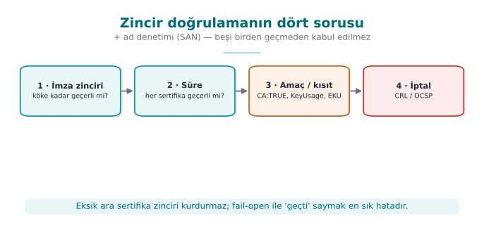
RTEÜ Bilgisayar Mühendisliği · 2026-2027 Güz
CEN429 Güvenli Programlama · Hafta 10
Sertifika zinciri — kim kimi imzalar?
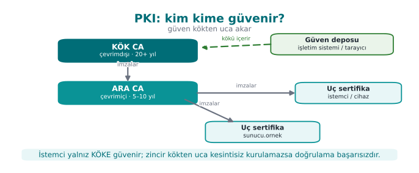
RTEÜ Bilgisayar Mühendisliği · 2026-2027 Güz
CEN429 Güvenli Programlama · Hafta 10
Kök ve ara CA
Kök CA: çevrimdışı, kendini imzalar, çok korunur.Ara CA: günlük sertifikaları çıkarır.Kök sızarsa felaket ; bu yüzden ara CA kullanılır.
RTEÜ Bilgisayar Mühendisliği · 2026-2027 Güz
CEN429 Güvenli Programlama · Hafta 10
Güven deposu (trust store)
İşletim sistemi/tarayıcı, güvenilen kök CA'ları taşır.
Bir zincir bu köklerden birine ulaşırsa güvenilir.
Ulaşamıyorsa → güvenilmez.
RTEÜ Bilgisayar Mühendisliği · 2026-2027 Güz
CEN429 Güvenli Programlama · Hafta 10
8. X.509 sertifikası
RTEÜ Bilgisayar Mühendisliği · 2026-2027 Güz
CEN429 Güvenli Programlama · Hafta 10
X.509 alanları — şema
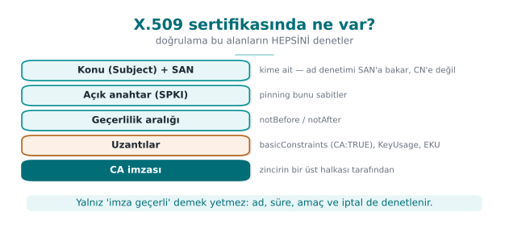
RTEÜ Bilgisayar Mühendisliği · 2026-2027 Güz
CEN429 Güvenli Programlama · Hafta 10
İçinde ne var?
Konu (subject): kime ait (alan adı).Açık anahtar. Geçerlilik: başlangıç/bitiş.Veren (issuer): hangi CA imzaladı.İmza.
RTEÜ Bilgisayar Mühendisliği · 2026-2027 Güz
CEN429 Güvenli Programlama · Hafta 10
SAN · ad denetimi
SAN (Subject Alternative Name): sertifikanın geçerli olduğu alan adları .Ad denetimi CN'e değil, SAN'a yapılır.
example.com için sertifika baska.com'da geçerli olmamalı.
RTEÜ Bilgisayar Mühendisliği · 2026-2027 Güz
CEN429 Güvenli Programlama · Hafta 10
9. Zincir doğrulama
RTEÜ Bilgisayar Mühendisliği · 2026-2027 Güz
CEN429 Güvenli Programlama · Hafta 10
Dört soru
Bir sertifika zinciri doğrularken:
İmza geçerli mi? (her seviye)Zincir güvenilir köke ulaşıyor mu?Süre dolmamış mı?Ad eşleşiyor mu (SAN)?
Dördü de evet olmalı.
RTEÜ Bilgisayar Mühendisliği · 2026-2027 Güz
CEN429 Güvenli Programlama · Hafta 10
OpenSSL ile · örnek
openssl verify -CAfile kok.crt \
-untrusted ara.crt sunucu.crt
-CAfile: güvenilen kök.-untrusted: ara sertifika(lar).
RTEÜ Bilgisayar Mühendisliği · 2026-2027 Güz
CEN429 Güvenli Programlama · Hafta 10
Sık hata · eksik ara sertifika
Sunucu ara sertifikayı göndermezse zincir köke ulaşmaz.
verify başarısız olur; -untrusted ara.crt ile geçer.Sahada çok yaygın yapılandırma hatası.
RTEÜ Bilgisayar Mühendisliği · 2026-2027 Güz
CEN429 Güvenli Programlama · Hafta 10
SPKI sabitleme (pinning)
Uygulama, beklenen sunucu anahtarının özetini gömer.
Sahte ama "geçerli" sertifika bile kabul edilmez.
Yedek pin şart (anahtar değişince kilitlenmemek için).
RTEÜ Bilgisayar Mühendisliği · 2026-2027 Güz
CEN429 Güvenli Programlama · Hafta 10
10. Sertifika iptali
RTEÜ Bilgisayar Mühendisliği · 2026-2027 Güz
CEN429 Güvenli Programlama · Hafta 10
Sertifika iptali — şema
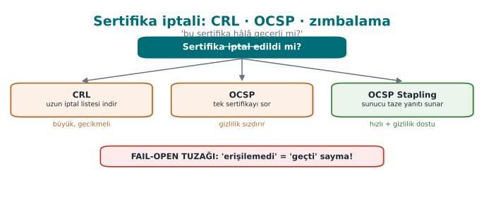
RTEÜ Bilgisayar Mühendisliği · 2026-2027 Güz
CEN429 Güvenli Programlama · Hafta 10
Neden iptal?
Bir sertifikanın gizli anahtarı sızarsa, süresi dolmadan iptal gerekir.
İptal edilmiş sertifika kabul edilmemeli.
RTEÜ Bilgisayar Mühendisliği · 2026-2027 Güz
CEN429 Güvenli Programlama · Hafta 10
CRL
CRL: iptal edilmiş sertifikaların periyodik listesi .Büyük olabilir, güncel olmayabilir.
RTEÜ Bilgisayar Mühendisliği · 2026-2027 Güz
CEN429 Güvenli Programlama · Hafta 10
OCSP
OCSP: bir sertifikanın durumunu anlık sorma.Daha güncel; ama gizlilik/hız sorunları.
RTEÜ Bilgisayar Mühendisliği · 2026-2027 Güz
CEN429 Güvenli Programlama · Hafta 10
OCSP zımbalama (stapling)
Sunucu, OCSP yanıtını kendisi getirip sertifikayla sunar.
Gizlilik + hız kazanır.
RTEÜ Bilgisayar Mühendisliği · 2026-2027 Güz
CEN429 Güvenli Programlama · Hafta 10
⚠️ Fail-open tuzağı
OCSP'ye ulaşılamayınca sertifikayı kabul etmek = fail-open.
Saldırgan OCSP'yi engelleyip iptal edilmiş sertifikayı geçirebilir.
Azaltma: Must-Staple , kısa ömürlü sertifikalar.
RTEÜ Bilgisayar Mühendisliği · 2026-2027 Güz
CEN429 Güvenli Programlama · Hafta 10
Bölüm 7–10 — kısa sınama
Zincir doğrulamanın dört sorusu?
Ad denetimi neye yapılır (CN mi SAN mı)?
Eksik ara sertifika neden verify'ı bozar?
Fail-open nedir, nasıl azaltılır?
RTEÜ Bilgisayar Mühendisliği · 2026-2027 Güz
CEN429 Güvenli Programlama · Hafta 10
Bölüm 7–10 — cevaplar
(1) zincir kök'e geçerli mi, (2) süre içinde mi, (3) amaç/kısıt (CA:TRUE, KeyUsage/EKU), (4) iptal (CRL/OCSP).
SAN (Subject Alternative Name); CN artık kullanılmaz.Zincir kök'e kurulamaz ; güven yolu tamamlanmaz → başarısız. Sunucu ara sertifikayı da göndermeli.
Fail-open: hata/erişilemezlikte "geçti" saymak. Azaltma: fail-closed , OCSP stapling / must-staple, hatayı reddet.
RTEÜ Bilgisayar Mühendisliği · 2026-2027 Güz
CEN429 Güvenli Programlama · Hafta 10
11. Anahtarı donanımda saklamak
RTEÜ Bilgisayar Mühendisliği · 2026-2027 Güz
CEN429 Güvenli Programlama · Hafta 10
HSM nedir?
HSM: anahtarları saklayan/işleten özel donanım.Anahtar HSM'in dışına çıkmaz ; "şunu imzala" dersiniz, sonuç döner.
Kurcalamaya dirençli.
RTEÜ Bilgisayar Mühendisliği · 2026-2027 Güz
CEN429 Güvenli Programlama · Hafta 10
PKCS#11
Anahtar modülleriyle konuşmanın standart arayüzü .
Uygulama anahtarın değerini görmez .
HSM'ler ve yazılım benzetimleri bu arayüzü sunar.
RTEÜ Bilgisayar Mühendisliği · 2026-2027 Güz
CEN429 Güvenli Programlama · Hafta 10
SoftHSM
HSM'in yazılım benzetimi ; aynı PKCS#11 arayüzü.
Geliştirme/test için; gerçek donanım koruması yok .
Üretimde gerçek HSM.
RTEÜ Bilgisayar Mühendisliği · 2026-2027 Güz
CEN429 Güvenli Programlama · Hafta 10
Neden donanım?
Yazılımda anahtar, beyaz kutu saldırgana açık (11. hafta).
Donanımda anahtar yalıtılmış → çok daha güçlü.
Mümkünse anahtarı yazılıma hiç koyma .
RTEÜ Bilgisayar Mühendisliği · 2026-2027 Güz
CEN429 Güvenli Programlama · Hafta 10
Anahtar yaşam döngüsü
Aşama
Ne yapılır
Üretim
Güçlü rastgelelik (CSPRNG)
Saklama
HSM/TEE ya da korunmuş
Kullanım
En az yetki, sabit zamanlı
Kripto-periyot
Ömür sınırı
Yenileme
Düzenli
İmha
Bellekten güvenli silme
RTEÜ Bilgisayar Mühendisliği · 2026-2027 Güz
CEN429 Güvenli Programlama · Hafta 10
12. Kuantum sonrası kripto
RTEÜ Bilgisayar Mühendisliği · 2026-2027 Güz
CEN429 Güvenli Programlama · Hafta 10
Tehdit
Yeterince güçlü kuantum bilgisayar, bugünkü RSA/ECC 'yi kırabilir.
"Şimdi topla, sonra çöz" saldırısı: bugün şifreli veriyi sakla, gelecekte çöz.
RTEÜ Bilgisayar Mühendisliği · 2026-2027 Güz
CEN429 Güvenli Programlama · Hafta 10
PQC · yaklaşım
Kuantuma dayanıklı algoritmalar (ör. ML-KEM anahtar kapsülleme).
Standartlaşma sürüyor.
Kripto-çeviklik: algoritmayı kolay değiştirebilecek tasarım.
RTEÜ Bilgisayar Mühendisliği · 2026-2027 Güz
CEN429 Güvenli Programlama · Hafta 10
Bugün ne yapmalı?
Kripto-çevik ol (algoritmayı sabitleme).
Uzun ömürlü sırlar için PQC'yi izle.
Panik yok; ama hazırlık.
RTEÜ Bilgisayar Mühendisliği · 2026-2027 Güz
CEN429 Güvenli Programlama · Hafta 10
13. Proje: bu hafta (S8, S11)
RTEÜ Bilgisayar Mühendisliği · 2026-2027 Güz
CEN429 Güvenli Programlama · Hafta 10
Proje · S8/S11
[ ] Algoritma envanteri: amaç, algoritma, kip, anahtar uzunluğu, kütüphane.
[ ] Anahtar yaşam döngüsü tablosu.
[ ] TLS/sertifika doğrulaması; varsa sabitleme + yedek pin.
[ ] İmza doğrulaması (güncelleme dosyasında).
RTEÜ Bilgisayar Mühendisliği · 2026-2027 Güz
CEN429 Güvenli Programlama · Hafta 10
Çözümlü kendini sınama
RTEÜ Bilgisayar Mühendisliği · 2026-2027 Güz
CEN429 Güvenli Programlama · Hafta 10
Soru 1
RSA-2048 + AES-256 sisteminin güvenlik düzeyi?
Cevap: ~112 bit (en zayıf halka RSA-2048). 128 bit için RSA-3072 ya da ECC.
RTEÜ Bilgisayar Mühendisliği · 2026-2027 Güz
CEN429 Güvenli Programlama · Hafta 10
Soru 2
"Dolgu geçersiz" ve "MAC geçersiz" ayrı iletiler: risk?
Cevap: Dolgu kâhini; saldırgan yanıtlara bakıp mesajı çözebilir. Tek ve aynı hata; tercihen AEAD.
RTEÜ Bilgisayar Mühendisliği · 2026-2027 Güz
CEN429 Güvenli Programlama · Hafta 10
Soru 3
if (EVP_DigestVerify(...)) neden hatalı?
Cevap: Negatif hata değeri de doğru sayılır; denetim == 1 olmalı. Ayrıca imzalı içerik sürümü kapsamalı.
RTEÜ Bilgisayar Mühendisliği · 2026-2027 Güz
CEN429 Güvenli Programlama · Hafta 10
Soru 4
verify ara sertifika olmadan neden başarısız?
Cevap: Zincir köke ulaşamaz; ara sertifika eksik. Sahada sunucu ara sertifikayı göndermiyordur.
RTEÜ Bilgisayar Mühendisliği · 2026-2027 Güz
CEN429 Güvenli Programlama · Hafta 10
Soru 5
OCSP'ye ulaşılamayınca kabul: hangi örüntü, nasıl azaltılır?
Cevap: Fail-open (yumuşak başarısızlık). Must-Staple ya da kısa ömürlü sertifikalar.
RTEÜ Bilgisayar Mühendisliği · 2026-2027 Güz
CEN429 Güvenli Programlama · Hafta 10
Soru 6
Kimliksiz DH'ye MITM nasıl engellenir?
Cevap: DH değerleri kimliği bilinen anahtarla imzalanır (TLS 1.3 CertificateVerify) ve karşı taraf doğrular.
RTEÜ Bilgisayar Mühendisliği · 2026-2027 Güz
CEN429 Güvenli Programlama · Hafta 10
Soru 7
Zincir doğrulamanın dört sorusu?
Cevap: İmza geçerli mi, güvenilir köke ulaşıyor mu, süre dolmamış mı, ad (SAN) eşleşiyor mu.
RTEÜ Bilgisayar Mühendisliği · 2026-2027 Güz
CEN429 Güvenli Programlama · Hafta 10
Soru 8
Anahtarı neden yazılıma koymamalı? Alternatif?
Cevap: Beyaz kutu saldırgan yazılımdaki anahtarı çıkarabilir. Alternatif: HSM/TEE (PKCS#11); yoksa whitebox + katman (11. hafta).
RTEÜ Bilgisayar Mühendisliği · 2026-2027 Güz
CEN429 Güvenli Programlama · Hafta 10
Sözlük
Terim
Anlam
AEAD
Şifreleme + bütünlük birlikte
Encrypt-then-MAC
Doğru sıra
OAEP/PSS
RSA şifre/imza dolgusu
Ed25519/X25519
İmza / anahtar anlaşması
SAN
Sertifika ad denetimi
CRL/OCSP
İptal listesi / anlık sorgu
RTEÜ Bilgisayar Mühendisliği · 2026-2027 Güz
CEN429 Güvenli Programlama · Hafta 10
Özet: bu haftanın tek cümlesi
Kriptoda güvenlik doğru algoritmadan çok doğru kullanımdadır : AEAD, doğru dolgu, doğrulanan imza, denetlenen
RTEÜ Bilgisayar Mühendisliği · 2026-2027 Güz
CEN429 Güvenli Programlama · Hafta 10
Gelecek hafta
11. hafta — Whitebox kriptografi
Anahtar yazılımda korunuyorsa ne olur? Beyaz kutu saldırgan, tablo tabanlı WBC ve sınırları.
RTEÜ Bilgisayar Mühendisliği · 2026-2027 Güz
CEN429 Güvenli Programlama · Hafta 10
Ek A · OpenSSL ile zincir (adım adım)
RTEÜ Bilgisayar Mühendisliği · 2026-2027 Güz
CEN429 Güvenli Programlama · Hafta 10
Amaç
Küçük bir zincir kuralım:
Kök CA → Ara CA → Sunucu sertifikası.
Sonra verify ile doğrulayalım ve tipik hatayı görelim.
RTEÜ Bilgisayar Mühendisliği · 2026-2027 Güz
CEN429 Güvenli Programlama · Hafta 10
Adım 1 · kök CA (kendini imzalar)
openssl req -x509 -newkey ed25519 \
-keyout kok.key -out kok.crt \
-subj "/CN=Ders Kok CA" -days 3650 -nodes
Kök kendini imzalar; çevrimdışı tutulur.
RTEÜ Bilgisayar Mühendisliği · 2026-2027 Güz
CEN429 Güvenli Programlama · Hafta 10
Adım 2 · ara CA (kök imzalar)
openssl req -newkey ed25519 -keyout ara.key \
-out ara.csr -subj "/CN=Ders Ara CA" -nodes
openssl x509 -req -in ara.csr -CA kok.crt -CAkey kok.key \
-CAcreateserial -out ara.crt -days 1825
RTEÜ Bilgisayar Mühendisliği · 2026-2027 Güz
CEN429 Güvenli Programlama · Hafta 10
Adım 3 · sunucu sertifikası (ara imzalar)
openssl req -newkey ed25519 -keyout sunucu.key \
-out sunucu.csr -subj "/CN=ornek.test" -nodes
openssl x509 -req -in sunucu.csr -CA ara.crt -CAkey ara.key \
-CAcreateserial -out sunucu.crt -days 365
RTEÜ Bilgisayar Mühendisliği · 2026-2027 Güz
CEN429 Güvenli Programlama · Hafta 10
Adım 4 · doğrula (eksik ara)
openssl verify -CAfile kok.crt sunucu.crt
Zincir köke ulaşamıyor: ara sertifika eksik .
RTEÜ Bilgisayar Mühendisliği · 2026-2027 Güz
CEN429 Güvenli Programlama · Hafta 10
Adım 5 · doğrula (ara ile)
openssl verify -CAfile kok.crt \
-untrusted ara.crt sunucu.crt
Ara sertifikayı verince zincir tamamlanır.
RTEÜ Bilgisayar Mühendisliği · 2026-2027 Güz
CEN429 Güvenli Programlama · Hafta 10
Ders
Sunucu, ara sertifikayı da göndermeli.
Eksikse istemci "issuer bulunamadı" der.
Sahadaki en yaygın TLS yapılandırma hatası.
RTEÜ Bilgisayar Mühendisliği · 2026-2027 Güz
CEN429 Güvenli Programlama · Hafta 10
Zincirdeki dört soru · uygulaması
İmza: her seviye üsttekince imzalı ✓Kök: -CAfile kok.crt güven deposu ✓Süre: -days içinde ✓Ad: uygulamada SAN denetimi (verify ad denetlemez!)
RTEÜ Bilgisayar Mühendisliği · 2026-2027 Güz
CEN429 Güvenli Programlama · Hafta 10
Ek B · Kripto tasarım vakası
RTEÜ Bilgisayar Mühendisliği · 2026-2027 Güz
CEN429 Güvenli Programlama · Hafta 10
Kurgu
Bir mobil uygulama:
Yerel hassas veriyi şifreliyor.
Sunucuyla güvenli konuşuyor.
Güncellemeleri doğruluyor.
Kripto tasarımını yapalım.
RTEÜ Bilgisayar Mühendisliği · 2026-2027 Güz
CEN429 Güvenli Programlama · Hafta 10
Yerel veri şifreleme
AES-256-GCM (AEAD): gizlilik + bütünlük.Nonce sayaç/rastgele, tekrarsız .
Anahtar TEE/HSM'de; yoksa whitebox (11).
RTEÜ Bilgisayar Mühendisliği · 2026-2027 Güz
CEN429 Güvenli Programlama · Hafta 10
Sunucu iletişimi
TLS 1.3 : X25519 anahtar anlaşması + AEAD.Sertifika zinciri doğrulama + (varsa) SPKI sabitleme + yedek pin.
Fail-open değil.
RTEÜ Bilgisayar Mühendisliği · 2026-2027 Güz
CEN429 Güvenli Programlama · Hafta 10
Güncelleme doğrulama
Ed25519 imza; verify == 1.İmzalı içerik sürümü kapsar; downgrade reddi.
Doğrulama anahtarı sabit/gömülü (bütünlükle korunur).
RTEÜ Bilgisayar Mühendisliği · 2026-2027 Güz
CEN429 Güvenli Programlama · Hafta 10
Anahtar envanteri (S8)
Anahtar
Amaç
Alg/uzunluk
Saklama
Veri anahtarı
Yerel şifreleme
AES-256
TEE/whitebox
Oturum anahtarı
TLS
X25519 türevi
Bellek, kısa ömür
İmza doğrulama
Güncelleme
Ed25519 açık
Gömülü
RTEÜ Bilgisayar Mühendisliği · 2026-2027 Güz
CEN429 Güvenli Programlama · Hafta 10
Ek C · Karar tabloları
RTEÜ Bilgisayar Mühendisliği · 2026-2027 Güz
CEN429 Güvenli Programlama · Hafta 10
Hangi kip?
İhtiyaç
Seçim
Gizlilik + bütünlük
AES-GCM / ChaCha20-Poly1305
Yalnız hız (donanım AES yok)
ChaCha20-Poly1305
Asla
ECB
Eski sistem CBC
+ encrypt-then-MAC, tek hata
RTEÜ Bilgisayar Mühendisliği · 2026-2027 Güz
CEN429 Güvenli Programlama · Hafta 10
Hangi asimetrik?
İhtiyaç
Seçim
İmza (modern)
Ed25519
Anahtar anlaşması
X25519
RSA şifreleme
RSA-OAEP (≥3072)
RSA imza
RSA-PSS
RTEÜ Bilgisayar Mühendisliği · 2026-2027 Güz
CEN429 Güvenli Programlama · Hafta 10
Karar kuralı
Modern, standart, iyi kullanılan seç.
AEAD öncelikli; ECC öncelikli.
Kararı ve gerekçesini S8 'e yaz.
RTEÜ Bilgisayar Mühendisliği · 2026-2027 Güz
CEN429 Güvenli Programlama · Hafta 10
Ek D · On sık kripto hatası
RTEÜ Bilgisayar Mühendisliği · 2026-2027 Güz
CEN429 Güvenli Programlama · Hafta 10
Hata 1 · kendi kriptonu yazmak
Yanlış: kendi "şifreleme" algoritman.Doğru: denenmiş kütüphane, standart algoritma.
RTEÜ Bilgisayar Mühendisliği · 2026-2027 Güz
CEN429 Güvenli Programlama · Hafta 10
Hata 2 · ECB kipi
Yanlış: ECB (desen sızar).Doğru: AEAD (GCM / ChaCha20-Poly1305).
RTEÜ Bilgisayar Mühendisliği · 2026-2027 Güz
CEN429 Güvenli Programlama · Hafta 10
Hata 3 · IV/nonce tekrarı
Yanlış: sabit ya da tekrar eden nonce.Doğru: benzersiz, tekrarsız nonce.
RTEÜ Bilgisayar Mühendisliği · 2026-2027 Güz
CEN429 Güvenli Programlama · Hafta 10
Hata 4 · şifreleme ama bütünlük yok
Yanlış: yalnız CBC, MAC yok.Doğru: AEAD ya da encrypt-then-MAC.
RTEÜ Bilgisayar Mühendisliği · 2026-2027 Güz
CEN429 Güvenli Programlama · Hafta 10
Hata 5 · ham RSA / yanlış dolgu
Yanlış: ham RSA, PKCS#1 v1.5.Doğru: OAEP (şifre), PSS (imza).
RTEÜ Bilgisayar Mühendisliği · 2026-2027 Güz
CEN429 Güvenli Programlama · Hafta 10
Hata 6 · zayıf özet
Yanlış: MD5, SHA-1.Doğru: SHA-256+.
RTEÜ Bilgisayar Mühendisliği · 2026-2027 Güz
CEN429 Güvenli Programlama · Hafta 10
Hata 7 · imza dönüşünü denetlememek
Yanlış: if (verify(...)).Doğru: == 1 ve sürüm kapsanır.
RTEÜ Bilgisayar Mühendisliği · 2026-2027 Güz
CEN429 Güvenli Programlama · Hafta 10
Hata 8 · zincir/ad denetlememek
Yanlış: yalnız imzaya bakmak.Doğru: dört soru + SAN denetimi.
RTEÜ Bilgisayar Mühendisliği · 2026-2027 Güz
CEN429 Güvenli Programlama · Hafta 10
Hata 9 · fail-open iptal
Yanlış: OCSP'ye ulaşılamayınca kabul.Doğru: Must-Staple, kısa ömür.
RTEÜ Bilgisayar Mühendisliği · 2026-2027 Güz
CEN429 Güvenli Programlama · Hafta 10
Hata 10 · anahtarı düz gömmek
Yanlış: static uint8_t k[16].Doğru: HSM/TEE; yoksa whitebox + katman (11).
RTEÜ Bilgisayar Mühendisliği · 2026-2027 Güz
CEN429 Güvenli Programlama · Hafta 10
Ek E · TLS'i kodda kurmak (eleştirel)
RTEÜ Bilgisayar Mühendisliği · 2026-2027 Güz
CEN429 Güvenli Programlama · Hafta 10
Sertifika doğrulamayı kapatma
SSL_CTX_set_verify(ctx, SSL_VERIFY_NONE, NULL );
Bu, MITM'e kapıyı açar. "Test için" diye bırakılan bu satır sahada felakettir.
RTEÜ Bilgisayar Mühendisliği · 2026-2027 Güz
CEN429 Güvenli Programlama · Hafta 10
Ad denetimini atlamak
Zincir geçerli ama ad doğrulanmıyorsa, saldırganın geçerli sertifikası kabul edilir.
Ana bilgisayar adı (SAN) mutlaka denetlenir.
RTEÜ Bilgisayar Mühendisliği · 2026-2027 Güz
CEN429 Güvenli Programlama · Hafta 10
Sabitleme · dikkatli
SPKI sabitleme güçlüdür ama yedek pin olmadan anahtar değişince kilitlenirsiniz.
En az bir yedek pin.
RTEÜ Bilgisayar Mühendisliği · 2026-2027 Güz
CEN429 Güvenli Programlama · Hafta 10
Eleştirel okuma kuralı
Bir TLS kurulum kodunu okurken sorun:
Doğrulama açık mı?
Ad denetleniyor mu?
Hata durumunda fail-closed mı?
RTEÜ Bilgisayar Mühendisliği · 2026-2027 Güz
CEN429 Güvenli Programlama · Hafta 10
Ek F · Hızlı başvuru
RTEÜ Bilgisayar Mühendisliği · 2026-2027 Güz
CEN429 Güvenli Programlama · Hafta 10
Sözlük (ek)
Terim
Anlam
Nonce
Tek kullanımlık sayı
KDF
Anahtar türetme fonksiyonu
İleri gizlilik
Eski oturumlar sonra çözülemez
Trust store
Güvenilen kök CA'lar
Kripto-periyot
Anahtar ömrü
Kripto-çeviklik
Algoritmayı kolay değiştirme
RTEÜ Bilgisayar Mühendisliği · 2026-2027 Güz
CEN429 Güvenli Programlama · Hafta 10
Kripto kontrol listesi
[ ] AEAD (GCM), nonce tekrarsız
[ ] Bütünlük var (AEAD/EtM)
[ ] RSA-OAEP/PSS ya da Ed25519/X25519
[ ] İmza ==1 + sürüm kapsar
[ ] Zincir + SAN doğrulanıyor, fail-closed
[ ] Anahtar yaşam döngüsü + saklama belgeli
RTEÜ Bilgisayar Mühendisliği · 2026-2027 Güz
CEN429 Güvenli Programlama · Hafta 10
Son söz (10. hafta)
Kriptoyu "açık/kapalı" değil, doğru kullanılıp kullanılmadığıyla değerlendirin.
Doğru kip, doğru dolgu, doğrulanan imza, denetlenen zincir, iyi yönetilen anahtar.
RTEÜ Bilgisayar Mühendisliği · 2026-2027 Güz
Konuşma notu: Bu hafta kriptografinin yapı taşlarını ve PKI'yi uçtan uca kuruyoruz: kipler, MAC, RSA ve eliptik eğriler, imza, sertifika zinciri, iptal ve anahtar saklama.
Konuşma notu: Bu hafta kriptonun doğru kullanımı ve PKI. Öğrenciler 3. haftada girişi gördü; burada sıfırdan hatırlatıp derinleştiriyoruz. Vurgu: doğru algoritma değil, doğru KULLANIM.
Konuşma notu: Kripto terimlerini sıfırdan tanımlıyoruz; 3. haftadan hatırlatma + yeni terimler.
Konuşma notu: Sonra MAC/HMAC ve asimetrik.
Konuşma notu: Sonra dijital imza tuzakları ve DH.
Konuşma notu: Sonra PKI, X.509, zincir, iptal.
Konuşma notu: Sonra HSM, PKCS#11, PQC, proje.
Konuşma notu: Sentetik bir kök→ara→sunucu zinciri kurup doğruluyoruz. Değerler örnektir.
Konuşma notu: Her biri bir slayt: hata → doğrusu. Hızlı geçilebilir.